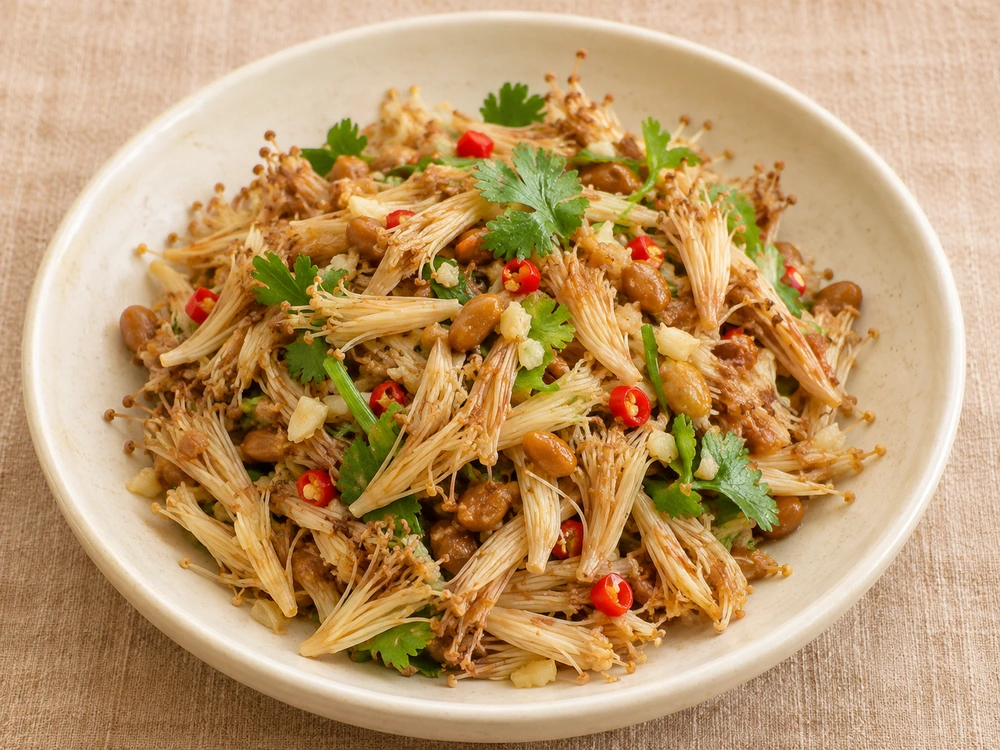

BLOOM TO TABLE
水豆豉拌花蕊
将煮熟的木棉花蕊拌上水豆豉、蒜末与少许辣椒，豆香托起花城的春日滋味。
花蕊入菜 · 春日凉拌 · 2 人份 · 家常做法参考
准备食材
- 处理并充分煮熟的木棉花蕊约 180 克
- 正规包装即食水豆豉 25—30 克
- 蒜 1 瓣，小米椒、香菜少量
- 生抽、醋、香油各少量
制作步骤
- 选用来源可追溯、明确供食用的木棉花蕊。若仍带花萼、花瓣或硬芯，应去除后清洗；干制花蕊按包装说明泡发。鲜花蕊与泡发后的干花蕊都先焯水、漂洗并沥干，再入菜。凉拌用的花蕊须充分煮熟，沥干后放入洁净容器冷却。
- 蒜、小米椒、香菜洗净切碎。取水豆豉与少量生抽、醋调匀；非即食豆豉须先按包装要求加热。
- 将调味汁拌入熟花蕊，最后加香菜与少量香油。
- 水豆豉已有咸味，尝后再决定是否补盐。现拌现吃，不长时间常温放置。
本页依据地方食俗整理为家常做法参考，非官方标准配方。按食材包装说明处理并充分做熟；不采食道路绿化花、来源不明或霉变落花。 用量可按人数与口味调整。